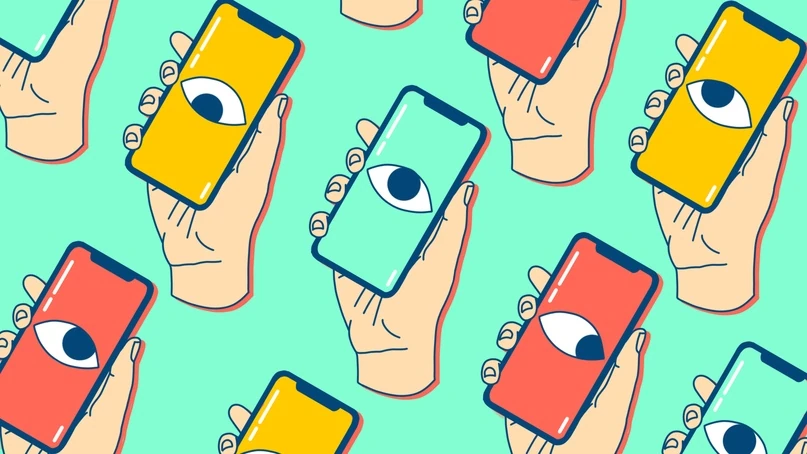
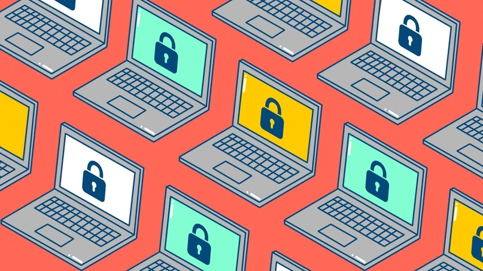

Один шаг от подлинного «я» к замятинскому «мы» — Александр Сорге разъясняет, почему персональные данные стоит беречь смолоду
Русские и китайцы — братья навек! По крайней мере, самые величайшие и мудрейшие из нас: наши обожаемые, богом помазанные на царствование госпатриции и партийные аристократы мыслят явно одинаково. Отечественные чиновники активно перенимают опыт своих восточных соседей по континенту, ставя всевозможные затворы на трубу с живительным интернетом и мечтая выдавать его исключительно по карточкам.

Ну или по паспортам: с 5 мая владельцы мессенджеров обязаны идентифицировать пользователей по номеру телефона. Наши же красные друзья, видимо, из солидарности со своими коллегами, проявляют традиционную черту любого российского функционера — распиздяйство: личные данные сотен тысяч пекинцев, за которыми следил китайский Большой брат, лежали в открытом доступе без пароля.
Самое удивительное, что в разгар этой священной битвы за интернет находятся те, кто готов принести на жертвенный алтарь не только анонимность, но и приватность, мотивируя это тем, что «им нечего скрывать». И все же, даже если вы чисты и непорочны аки лепесток лилии, персональные данные стоит беречь смолоду.
Личное дело
Ох и дивный же брат иногда попадается в этих наших славянских интернетах. Дай такому мессенджер со сквозным шифрованием — так он его в руках повертит, репу почешет, да и удалит. Анонимность, приватность, конфиденциальность — все это ему не нужно, слова-то какие богомерзкие, басурманские! Аргументируется это удачно придуманным чекистами мемом: «честному человеку скрывать нечего» — ну прямо гражданин-душа-нараспашку, «сердце на ладонке»! Видать, именно такие персонажи длинными зябкими ночами наяривают у буржуйки на портрет Усатого Тараканища, мечтая вернуть 37-й год.
По крайней мере, как-то иначе твердую уверенность этого представителя интернет-фауны в том, что товарищ Дзержинский своей железной рукой возьмет за жопу кого угодно, только не его, я объяснить не могу. Однако закрадываются сомнения в искренности подобных персонажей. Либо они и правда настолько правильные и живут столь уныло, что даже дрочат исключительно на порнуху, где актеры занимаются гетеросексуальным сексом в миссионерской позиции. Либо просто сказочные пиздоболы.
Почему-то приватность и конфиденциальность у нас часто начинают ассоциировать со страшной тайной, а ее защитники видятся то ли вражескими шпийонами, то ли половыми террористами-извращенцами. Мало кто думает, что разговор о приватности — это разговор не о сокрытии грязных секретов, а о защите информации. Необходимость замка на сейфе с драгоценностями и пин-кода на кредитке очевидна. Ведь перспектива кражи кровно заработанных барышей или бабушкиного золотого зуба впечатляет гораздо больше, чем похищения личной информации, даже несмотря на то что последнее может иметь гораздо более печальные последствия.
Но находятся ведь люди, готовые разбазаривать свои персональные данные направо и налево, искренне считающие: раз «нечего скрывать», то и защищать тоже ничего не нужно. Всем тем, кто с открытым забралом заявляет, что у него нет секретов, я хочу задать вопрос: вы действительно хотели бы, чтобы какой-нибудь совершенно незнакомый человек знал, во сколько ваш ребенок возвращается из школы? Или о состоянии здоровья ваших престарелых родителей? Или о том, где живет ваша девушка?
Даже самые безобидные переписки — информационный Клондайк для любого рода цифровых падальщиков.
Ну и еще парочка вопросов к таким честным гражданам: в какой позе вы трахаете свою жену? Как часто она делает вам минет? Раз уж вам нечего скрывать, напишите это в комментариях. Многие подумают, что это не мое собачье дело — и подумают совершенно справедливо. То, что мы вешаем занавески на окна, не значит, что мы мастерим бомбу из куска пластида и скороварки или варим зелья из целебных, но запрещенных трав. Просто мы не хотим, чтобы чужие люди совали свой нос в наши дела. Если вы показываете свои стихи только своей белогрудой пассии весом под центнер — это не значит, что там зашифрован рецепт наркотика. Это значит лишь, что стихи предназначены только для одного человека.
Не говоря уже о том, что интимная информация, попади она не в те руки, может существенно подмочить репутацию: мужики в качалке не поймут, если узнают о вашем собрании кукол Барби. Несмотря на то что ничего криминального или аморального в коллекционировании кукол нет.
Конечно, органы госбезопасности будут использовать эту информацию исключительно в мирных целях, для вашей же защиты. Но вдруг найдется какой-нибудь нечистый на руку чекист, который захочет надавить на вас вашими же приватными данными: информацией о слабостях или о семье? Ну, ради повышения раскрываемости и очередных «звездочек» на погонах — понимаю, совершенно абсурдная ситуация для нашей страны, но все же. Или просто превратно поймет переписку с другом, и сиди потом доказывай товарищу майору, что фраза «все прогнило, систему надо менять» относится к стояку у вас в ванной, а не к верному курсу партии.
Припоминая фразу про «нечего скрывать» многие почему-то забывают другую поговорку: «Был бы человек, а статья найдется». Не говоря уже о том, что любые хранилища данных имеют свойство протекать. Особенно государственные, сделанные ради фрикций пилой над бюджетными деньгами. И вот из них информация может уплыть к уже действительно мутным личностям, которые не побрезгуют банально шантажировать вас ради звонкого биткойна.

Контроль общества
Небезызвестный гражданин Сноуден открыл миру информацию об американской программе со зловещим названием PRISM. С помощью «призмы» АНБ могло перехватывать ваши электронные письма, слушать ваши голосовые сообщения, просматривать фото- и видеонюдсы от вашей пассии и, конечно же, читать похабные переписки с ней. По оценкам The Guardian и The Washington Post, ручной Большой брат АНБ ежедневно перехватывал 1,7 миллиарда телефонных разговоров и электронных сообщений и около пяти миллиардов записей о геолокации смартфонов по всему миру.
Черт возьми, давайте будем честны, если ребята из ФСБ или ЦРУ захотят взять вас за жопу, они возьмут, заклеиваете вы камеру на ноутбуке пластырем или нет.
Да, мы сами развеиваем пелену приватности, ежедневно изрыгая в Сеть гигабайты личных данных. Однако нужно видеть разницу между той информацией, которую мы сами выставляем напоказ, и той, которую у нас хотят отнять насильно. Я прекрасно понимаю: по геометкам в каком-нибудь Foursquare любой желающий может узнать мой любимый бар, тексты, кото��ые я оставляю в постах на Facebook, прочтут тысячи глаз, а на фотографии из Instagram, если повезет, прямо сейчас передергивает какой-нибудь извращуга. Любой ваш шаг в глобальной Сети оставляет след, который навряд ли когда-нибудь исчезнет: например, с 2006-го по 2017 год Библиотека Конгресса приобретала и хранила весь архив публичных постов в Twitter.
Но это не значит, что я хочу делиться информацией о том, что я искал в Google, куда ездил на Uber и кого лайкал в Tinder (а в Grindr — и подавно). И уж тем более это не значит, что спецслужбам, будь они государственными или корпоративными, нужно еще больше развязывать руки, дозволять лезть своими склизкими щупальцами в самые интимные дыры нашей души.
«Нечего скрывать» и «все равно достанут» — это не слова рыцаря без страха и упрека с открытым забралом. Это аргументы пораженца, который не хочет признавать проблему.
Корпорации и правительства старательно внушают нам, что личная информация — это мелочь, пустяк, с которым не жалко расстаться. При этом почему-то так же старательно собирают каждую ее крупинку, пытаясь отвоевать хотя бы кусочек приватности.
Интерес коррумпированных псов в погонах вполне понятен, а вот гиены в белых накрахмаленных воротничках просто нагревают на нас руки. IT-гиганты давно поняли, что Big data — золото XXI века. Ресурс, для добычи которого нужен лишь цифровой философский камень, — социальная сеть. И выторговать это золото у наивных туземцев легче легкого, достаточно предложить им цветастые бусы: коины, скидки, кэшбеки и дешевые сказки про то, что информация собирается «ради вашей же безопасности и удобства». Сказки, которые бараны хавают, радостно блея, что им «нечего скрывать».
То, что персональные данные любого рода — это ценность, начинает доходить даже до самых отбитых. Именно поэтому белые люди из IT-корпораций идут на уступки туземцам и выменивают личные данные уже не на бусы, а на вполне себе хрустящий доллар. Хоть и по заниженному курсу: тот же Facebook будет платить двадцатку в месяц каждому, кто установит приложения для сбора личных данных. И из тысяч этих информационных крупинок: тех, что мы скармливаем сами, и тех, что выклевывают у нас государственные и корпоративные стервятники, выстраивается вполне четкий портрет личности, со всеми вашими слабостями и страстями. И шантаж — лишь самое безобидное последствие, которое может быть.
Главная проблема в том, что этот цифровой портрет может быть воспринят превратно. То, что вы гуглили скороварку, мешок селитры и расписание электричек Москва — Петушки может говорить как о том, что вы — опасный экстремист, так и о том, что вы просто собираетесь на дачу.
Недавно польские программисты представили стартап, который по фотографии дома определяет вероятность попадания его жителя в автомобильную аварию. Ваша страховка может стать дороже только потому, что вы живете в хрущевке, даже если водите вы аккуратно. Big data вообще открывает феноменальные возможности социального инжиниринга или манипуляции массовым сознанием. Признаться, я тоже верил, что мы должны принести приватность на алтарь глобализации, но это было до скандала с Cambridge Analytica.
А учитывая то, как корпорации любят сливать информацию силовикам, тут уже и недалеко до создания идеального гражданина: на сотрудничество с тем же АНБ шли Microsoft, Google, Yahoo!, Facebook, YouTube, Skype и Apple. Да и социальная инженерия — отнюдь не будущее: в Китае уже действует система социального рейтинга. Ведь чтобы контролировать человека, уже нет необходимости вживлять чип ему в мозг. Достаточно подключиться к чипу в его смартфоне.
Ведешь себя как законопослушный гражданин: платишь налоги, лоялен к власти — и с твоим рейтингом будет все в порядке. Попадешь в немилость — и твоя жизнь превратится в ад. Забудь про соцобеспечение и билеты на самолет. Твой удел — только самые дешевые поезда и койка в придорожном мотеле. Ведь теперь ты — человек третьего сорта. Это не мои фантазии, это история оппозиционного журналиста Лю Ху, про которого в своей статье рассказала Мара Хвистендаль.
Деформация личности
Вполне возможно, жизнь под пристальными очами Большого брата, корпоративных маркетологов и прочих информационных падальщиков приведет к тому, что понятие приватности обесценится полностью. Ведь когда почти любой знает твои слабости, секреты и тайны, то какой смысл их скрывать? Граница между частной и публичной жизнью сотрется, а конфиденциальной будет считаться только действительно важная информация вроде того же пин-кода.
Мы станем более открытыми и раскованными, и речь здесь вовсе не о сексе: если ничего не утаить, то нечего и стыдиться. Раздвинутся границы «нормальности», чего бы это ни касалось, изменятся нормы приемлемого и неприемлемого, морального и аморального.
Мы низвергнем стереотипы и предрассудки, скинем маски ханжества и предадимся радостной мастурбации на свое «я»: каждый сможет быть собой не только дома, но и на публике.
А различные девиации и особенности начнут восприниматься более терпимо. Но верится в эту утопию с трудом. Гораздо более вероятным видится другой сценарий. Представьте, что каждый раз, когда вы открываете свой розовый дневничок, чтобы записать самые сокровенные мыслишки, за вашей спиной появляется молчаливый наблюдатель. А теперь представьте, что этот наблюдатель следует за вами везде: едет в такси, сидит рядом на работе, слушает ваши разговоры в баре и смотрит вместе с вами порно. Вряд ли вы начнете чувствовать себя раскованно, скорее наоборот — вам будет неуютно. И вы едва ли будете откровенны, даже с самим собой.
Наша личность, наше подлинное «я», со всеми его слабостями, пороками, интересами и причудами открывается только когда мы остаемся в одиночестве либо надеваем маску анонимности. Она позволяет говорить нам открыто, именно так и то, что хотим сказать мы, — именно поэтому в любой нормальной стране любое голосование является анонимным.
На публике же наше «я» урезается до социально приемлемого карлика. Когда же личность постоянно находится под надзором, а в интимное то и дело тычут холодным металлическим щупом — это ведет не только к постоянному стрессу, но и к утрате идентичности.
Личность деградирует и заменяется тем самым карликом, для которого главное — быть удобоваримым для общества и приемлемым для наблюдателя.
Причем для постоянного контроля даже не нужны тысячи агентов Штази и доносчики под каждым кустом. Требования предоставить ключи шифрования или авторизоваться в мессенджерах фактически по паспорту с точки зрения «обеспечения национальной безопасности» просто-напросто абсурдны. Ведь добиться прослушки телефона или установить личность анонима по решению суда (если этого действительно требует «национальная безопасность», а не репрессивный аппарат) в любой стране не составит никакого труда.
Дело в другом. Всемирная Сеть и индульгенция на постоянную слежку создают такой цифровой паноптикум Бентама, «идеальную тюрьму», где каждый, кроме самого наблюдателя, на виду. А когда заключенный знает, что за ним могут следить, но не знает, когда именно, у него создается впечатление постоянного контроля. И он начинает вести себя «правильно» — так, как хочет надзиратель — всегда. Личность растворяется окончательно и «я» заменяется замятинским «мы». Конечно, все это делается ради общей безопасности, ради общего комфорта и спокойствия. Только вот стоит ли оно того?